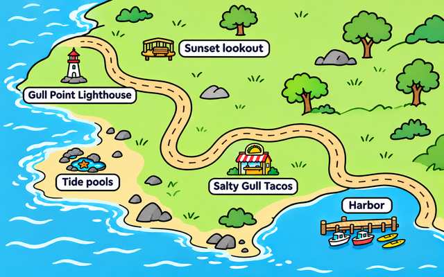

Three Days on the Coast Road
Three days, one small car and a list of places a friend swore by. This is the trip: a lighthouse you can climb, a tide pool full of sea stars, the best fish tacos on the coast, a morning on the water and one sunset I will be telling people about for years.

Day 1: Gull Point Lighthouse
The lighthouse keepers' cottage is a small museum now, and on Saturdays volunteers let you climb the 87 steps to the lantern room. Bring a jacket: it is windy at the top, even in June.

Day 1: The Tide Pools
At low tide the rocks below the lighthouse turn into a row of tiny aquariums. Look, don't touch: the animals that live here are more fragile than they seem.

Day 2: The Salty Gull Taco Stand
A friend told me not to leave the coast without eating here, and she was right. The fish is caught that morning, and the salsa is made in a bucket the size of a beach ball.

Day 3: Kayaking the Bay
The rental shack at the harbor opens at 8, and the water is calmest before 10. We paddled out to the kelp beds and a harbor seal followed us most of the way back.

Day 3: The Sunset
We drove back up to the point for the last evening. Nobody said a word for twenty minutes.